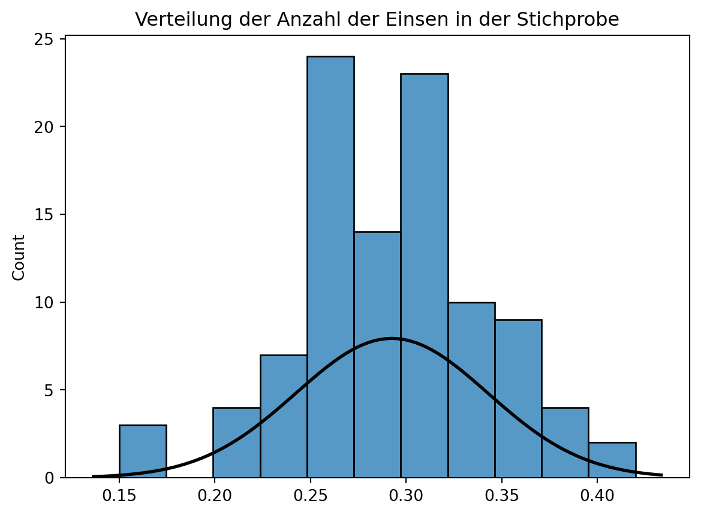
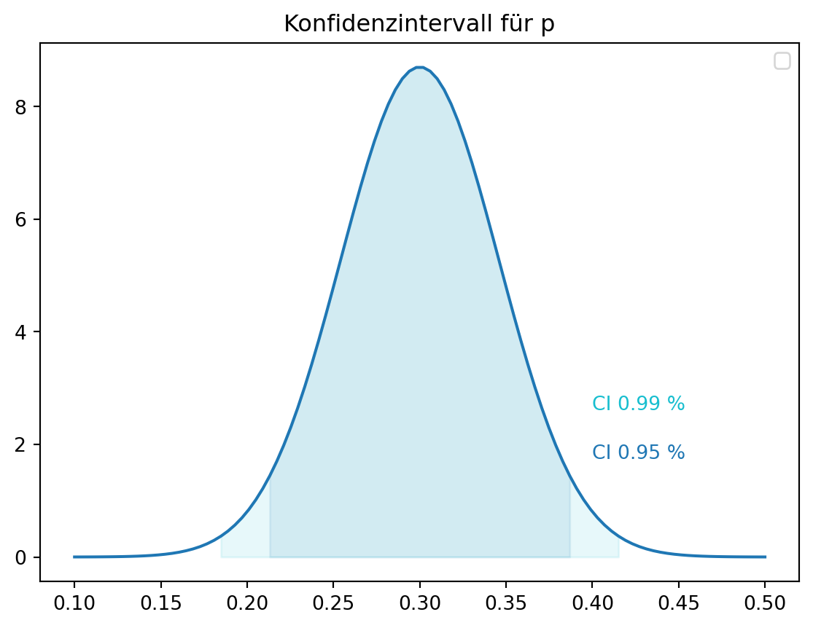
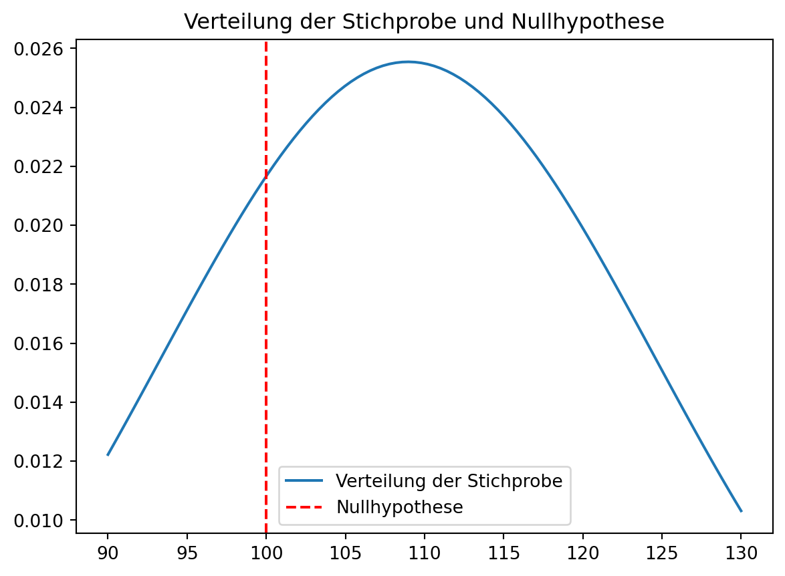
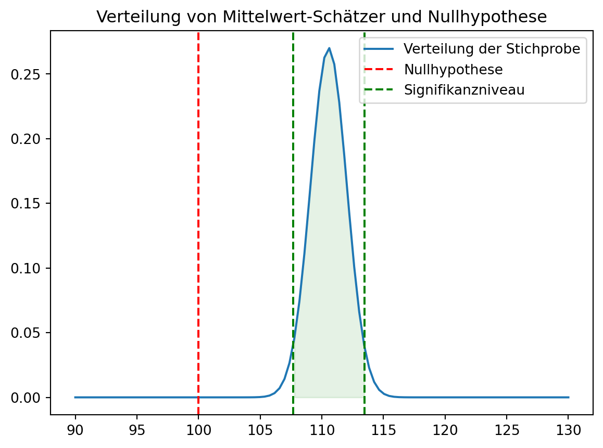

graph LR
U[Person] -->|0.001| A[Krebs]
U[Person] -->|0.999| D[Kein Krebs]
A[Krebs] -->|0.99| B[Positiv]
A[Krebs] -->|0.01| C[Negativ]
D[Kein Krebs] -->|0.05| E[Positiv]
D[Kein Krebs] -->|0.95| F[Negativ]
5 Interferenz
Bei der Frage der Interferenz geht es darum, was wir mit ausreichender Sicherheit über eine Population aussagen können, wenn wir nur eine Stichprobe haben. Ein Beispiel hierfür könnte sein, ob ein Parameter einer Verteilung signifikant von einem bestimmten Wert abweicht oder ob sich die Mittelwerte zweier Verteilungen signifikant unterscheiden.
5.1 Punktschätzer und Konfidenzintervalle
Ein Punktschätzer ist eine Schätz-Funktion, die eine Schätzung für einen Parameter (z.B. Mittelwert oder Varianz) einer Verteilung liefert. Da wir die wahre Verteilung der Grundgesamtheit nie direkt beobachten können, müssen wir Rückschlüsse daraus aus unserer Stichprobe ziehen. Dabei hilft uns wieder der Zentrale Grenzwertsatz.
Wir beginnen mit einem Beispiel einer Zufallsvariable \(X \sim \text{Bernoulli}(p)\), wobei uns der Parameter \(p\) unbekannt ist. Diesen Parameter wollen wir nun anhand unserer Stichprobe schätzen. Eine Schätzung für \(p\) ist der Anteil der Einsen in der Stichprobe \(\hat{p}\). Diesen Schätzer können wir berechnen als
\[ \hat{p} = \frac{1}{n} \sum_{i=1}^n X_i, \]
Bestimmung von Punktschätzern mittels Maximum-Likelihood-Schätzung
Um den Maximum-Likelihood-Schätzer (MLE) für den Parameter \(p\) einer Bernoulli-Verteilung zu finden, geht man wie folgt vor. Man stellt die Likelihood-Funktion der Beobachteten Werte in der Stichprobe auf und sucht dann nach dem Wert von \(p\), bei dem dieses Auftreten am wahrscheinlichsten ist.
5.1.0.0.1 1. Likelihood-Funktion aufstellen:
Angenommen, du hast \(n\) unabhängige und identisch verteilte Bernoulli-Zufallsvariablen \(X_1, X_2, \ldots, X_n\). Jede dieser Variablen \(X_i\) hat eine Bernoulli-Verteilung mit Parameter \(p\), was bedeutet, dass die Wahrscheinlichkeit, dass \(X_i = 1\) ist, gleich \(p\) ist und die Wahrscheinlichkeit, dass \(X_i = 0\) ist, gleich \(1-p\) ist.
Die Likelihood-Funktion ist das Produkt der Wahrscheinlichkeiten aller beobachteten Werte. Falls wir \(k\) Einsen und \(n-k\) Nullen in unserer Stichprobe haben, ist die Likelihood-Funktion gegeben durch:
\[ L(p) = \prod_{i=1}^{n} p^{x_i} (1-p)^{1-x_i} = P(X_1=x_1) \cdot P(X_2=x_2) \cdot \ldots \cdot P(X_n=x_n) \]
Das vereinfacht sich zu:
\[ L(p) = p^k (1-p)^{n-k} \]
wobei \(k = \sum_{i=1}^{n} x_i\) die Anzahl der Einsen in der Stichprobe ist.
5.1.0.0.2 2. Log-Likelihood-Funktion aufstellen:
Um die Berechnungen zu vereinfachen, nimmt man den natürlichen Logarithmus der Likelihood-Funktion, da nun die Produkte zu Summen werden und dies die Ableitungen vereinfacht:
\[ \log L(p) = k \log p + (n-k) \log (1-p) \]
5.1.0.0.3 3. Log-Likelihood maximieren:
Um die Log-Likelihood-Funktion zu maximieren, leiten wir sie nach \(p\) ab und setzen diese Ableitung gleich null:
\[ \frac{d}{dp} \log L(p) = \frac{k}{p} - \frac{n-k}{1-p} = 0 \]
5.1.0.0.4 4. Gleichung nach \(p\) auflösen:
Um diese Gleichung nach \(p\) aufzulösen, bringen wir sie auf einen gemeinsamen Nenner:
\[ \frac{k(1-p) - (n-k)p}{p(1-p)} = 0 \]
Der Zähler muss null sein, damit der Bruch null wird und wir die Nullstellen finden:
\[ k - kp - np + kp = k - np = 0 \]
Das ergibt:
\[ k = np \]
Daraus folgt, dass der MLE für \(p\):
\[ \hat{p} = \frac{k}{n} = \frac{1}{n} \sum_{i=1}^{n} x_i. \]
5.1.0.0.5 Fazit:
Der Maximum-Likelihood-Schätzer \(\hat{p}\) für den Parameter \(p\) einer Bernoulli-Verteilung ist also gleich dem Stichprobenmittelwert \(frac{k}{n}\), was intuitiv der Anteil der beobachteten Einsen in der Stichprobe ist. Der Maximum-Likelihood-Schätzer ergibt sich, aus dem Gedanken, dass der Parameter \(p\) der Wert ist, bei dem die beobachteten Werte in der Stichprobe am wahrscheinlichsten sind.
Anwendund des Zentralen Grenzwertsatzes für Schätzer
Wenn eine Stichprobe groß genug ist und die Ziehungen unabhängig und identisch Verteilt sind, dann ist \(\hat{p}\) normalverteilt mit
\[ \mu_{\hat{p}} = p, \]
was bedeutet, dass wird bei unendlich vielen Wiederholungen im Mittel den wahren Wert von \(p\) schätzen. Einen Schätzer mit dieser Eigenschaft nennen wir erwartungstreu.
Die Standardabweichung, welche wir bei einem Schätzer als Standardfehler bezeichnen, gegeben durch \[ SE_{\hat{p}}=\sigma_{\hat{p}} = \sqrt{\frac{p(1-p)}{n}}. \]
Damit dies gilt muss \(np \geq 10\) und \(n(1-p) \geq 10\) sein.
Um dies zu illustrieren, schauen wir uns die Grundgesamtheit und eine Stichprobe an. Wir ziehen \(N=1000\) Zufallszahlen aus einer Bernoulli-Verteilung mit \(p=0.3\) und wählen eine Stichprobe der Größe \(n=100\). Diesen Vorgang wiederholen wir \(m=100\) mal. Den Anteil der Einsen in der Stichprobe speichern wir als Stichprobenhäufigkeit \(\hat{p}\).
import numpy as np
import matplotlib.pyplot as plt
import seaborn as sns
from scipy.stats import norm
# Definiere Anzahl der Versuche
m = 100
results = np.zeros(m)
# Grundgesamtheit ist Bernoulli verteilt
p = 0.3
N = 1000
for i in range(m):
# Grundgesamtheit
X = np.random.binomial(1, p, N)
# Stichprobe mit n=100
n = 100
X_sample = np.random.choice(X, n)
# Speichere das Anzahl der Einsen
results[i] = np.sum(X_sample)/n
# Wie verteilt sich die Anzahl der Einsen in der Stichprobe
sns.histplot(results)
# Wie gut passt eine Normalverteilung
mu, std = norm.fit(results)
xmin, xmax = plt.xlim()
x = np.linspace(xmin, xmax, 100)
p = norm.pdf(x, mu, std)
plt.plot(x, p, 'k', linewidth=2)
plt.title('Verteilung der Anzahl der Einsen in der Stichprobe')
plt.show()
print(f'Mittelwert von p_hat: {np.mean(results)/n:.2f}')
print(f'Standardabweichung von p_hat: {np.std(results)/n:.2f}')
Mittelwert von p_hat: 0.00
Standardabweichung von p_hat: 0.00Verglichen mit den theoretischen Werten übergibt dies eine hohe Übereinstimmung.
\[ \mu_{\hat{p}} = p = 0.3, \]
\[ SE_{\hat{p}}=\sigma_{\hat{p}} = \sqrt{\frac{p(1-p)}{n}} = 0.046. \]
5.1.1 Konfidenzintervalle
Ein Konfidenzintervall ist ein Intervall, das den wahren Wert eines Parameters mit einer bestimmten Wahrscheinlichkeit enthält. Bei einer Normalverteilung haben wir schon beobachtet, dass ca. 95% der Werte innerhalb von zwei Standardabweichungen liegen. Wir können dieses Wissen nutzen, um ein Konfidenzintervall zu berechnen.
Important
Ein Konfidenzintervall \(\text{CI}_{1-\alpha}\) gibt für einen Schätzer \(\hat{\theta}\) eines Parameters \(\theta\) einen Intervall an, in dem der wahre Wert von \(\theta\) mit einer bestimmten Wahrscheinlichkeit (\(1-\alpha\)) liegt. Das Konfidenzintervall für den Mittelwert \(\mu\) einer Normalverteilung mit bekannter Varianz \(\sigma^2\) ist gegeben durch
\[ \left(\bar{\theta} - z_{\alpha/2} \frac{\sigma}{\sqrt{n}}, \bar{\theta} + z_{\alpha/2} \frac{\sigma}{\sqrt{n}}\right), \]
wobei \(z_{\alpha/2}\) das \(\alpha/2\)-Quantil der Standardnormalverteilung ist und wir dieses durch die Multiplikation mit der Standardabweichung \(\sigma\) und Division durch die Wurzel der Stichprobengröße \(n\) auf unsere Ursprungsverteilung skalieren.
Für den Fall, dass die Varianz unbekannt ist, können wir die Stichprobenvarianz \(S^2\) verwenden und erhalten
Erklärung
Zunächst überführen wir die Normalverteilung von \(\theta\) in eine Standardnormalverteilung. Dazu subtrahieren wir den Erwartungswert \(\mu\) und teilen durch die Standardabweichung \(\sigma\). Damit erhalten wir eine Standardnormalverteilung mit Erwartungswert 0 und Varianz 1.
Nun können wir die Wahrscheinlichkeit berechnen, dass der Wert innerhalb eines Intervalls liegt. Für ein Konfidenzniveau von 95% ist \(\alpha = 0.05\). Das bedeutet, dass wird an beiden Seiten der Verteilung \(\alpha/2 = 0.025\) abtrennen.
In der Tabelle \(\Phi(z)\) der Standardnormalverteilung suchen wir nun den Wert, ab dem 97.5% der Werte unterhalb liegen. Dieser Wert ist \(z_{\alpha/2} = 1.96\). Aus der Symmetrie der Normalverteilung folgt, dass der Wert für \(-z_{\alpha/2}\) ebenfalls 1.96 ist.
In unserem Beispiel ist die Stichprobenhäufigkeit \(\hat{p}\) normalverteilt mit \(\mu_{\hat{p}} = p\) und \(\sigma_{\hat{p}} = \sqrt{\frac{p(1-p)}{n}}\). Wir können also ein Konfidenzintervall für \(p\) berechnen.
\[ \left(\hat{p} - z_{\alpha/2} \sqrt{\frac{\hat{p}(1-\hat{p})}{n}}, \hat{p} + z_{\alpha/2} \sqrt{\frac{\hat{p}(1-\hat{p})}{n}}\right). \]
Aus der Tabelle der Standardnormalverteilung können wir den Wert für \(z_{\alpha/2}\) ablesen. Für ein Konfidenzniveau von 95% ist \(\alpha = 0.05\) und damit \(z_{\alpha/2} = 1.96\). Alternativ können wir dieses auch mit der Funktion norm.ppf berechnen.
# Konfidenzintervall
alpha = 0.05
z = norm.ppf(1-alpha/2)
print(f'z_alpha/2: {z:.2f}')z_alpha/2: 1.96Damit ergibt sich für unser Beispiel ein Konfidenzintervall von
\[ \left(0.3 - 1.96 \sqrt{\frac{0.3(1-0.3)}{100}}, 0.3 + 1.96 \sqrt{\frac{0.3(1-0.3)}{100}}\right) = (0.21, 0.39). \]
Wir sind uns also zu 95% sicher, dass der wahre Wert von \(p\) in diesem Intervall liegt.
Caution
Welchen Faktor können wir anpassen, wenn wir den Konfidenzintervall verkleineren wollen?
Welcher Konfidenzintervall würde sich für ein Konfidenzniveau von 99% ergeben?
Lösung
Der Faktor, den wir anpassen können, die größe der Stichprobe \(n\), da diese im Nennern steht.
Für ein Konfidenzniveau von 99% ist \(\alpha = 0.01\) und damit \(z_{\alpha/2} = 2.58\). Damit ergibt sich für unser Beispiel ein Konfidenzintervall von
\[ \left(0.3 - 2.58 \sqrt{\frac{0.3(1-0.3)}{100}}, 0.3 + 2.58 \sqrt{\frac{0.3(1-0.3)}{100}}\right) = (0.18, 0.42). \]
5.1.2 Darstellung des Konfidenzintervalls eines normalverteilten Parameters
# Konfidenzniveau
import seaborn as sns
import matplotlib.pyplot as plt
from scipy.stats import norm
# Konfidenzniveaus
alphas = [0.05, 0.01]
cmap = plt.get_cmap('tab10')
colors = cmap(np.linspace(0, 1, len(alphas)))
# Normalverteilung
mu = 0.3
sigma = np.sqrt(0.3*(1-0.3)/100)
# Konfidenzintervall
x = np.linspace(0.1, 0.5, 100)
y = norm.pdf(x, mu, sigma)
plt.plot(x, y)
for alpha in alphas:
z = norm.ppf(1-alpha/2)
lower = mu - z*sigma
upper = mu + z*sigma
print(f'Konfidenzintervall für alpha={alpha}: ({lower:.2f}, {upper:.2f})')
# Darstellung
plt.fill_between(x, y, where=(x >= lower) & (x <= upper), alpha=0.1, color=colors[alphas.index(alpha)])
# Text
plt.text(mu+0.1, norm.pdf(mu, mu, sigma) * (0.2+ 0.1 * alphas.index(alpha)), f'CI {1-alpha} %', color=colors[alphas.index(alpha)])
plt.legend()
plt.title('Konfidenzintervall für p')
plt.show()Konfidenzintervall für alpha=0.05: (0.21, 0.39)
Konfidenzintervall für alpha=0.01: (0.18, 0.42)/tmp/ipykernel_3165/598074221.py:35: UserWarning:
No artists with labels found to put in legend. Note that artists whose label start with an underscore are ignored when legend() is called with no argument.

5.1.3 Punktschätzer und Konfidenzintervall für andere Fälle
Für andere Verteilungen und Schätzer können wir die gleichen Prinzipien anwenden. Wir können die Schätzer und Konfidenzintervalle für den Mittelwert, die Varianz oder andere Parameter berechnen. Dabei müssen wir nur die Verteilung des Schätzers kennen und die entsprechenden Formeln anwenden.
5.2 Hypothesentests
Ein Hypothesentest ist ein statistisches Verfahren, um zu entscheiden, ob eine Hypothese über eine Population auf Basis einer Stichprobe abgelehnt oder beibehalten wird. Dabei wird eine Nullhypothese \(H_0\) aufgestellt, die wir widerlegen wollen. Die Nullhypothese ist meist eine Aussage über den Wert eines Parameters, z.B. dass der Mittelwert einer Verteilung gleich einem bestimmten Wert ist. Die Alternative Hypothese \(H_1\) ist die Aussage, die wir beweisen wollen.
Zunächst wirkt es ungewohnt, dass wir etwas aufstellen, nur um es zu widerlegen. Dieser Ansatz ist jedoch ein zentraler Bestandteil der wissenschaftlichen Methode und fußt tief in der westlichen Philosophie.
Die Dialektik ist eine Methode, um Wahrheit zu finden, indem eine These aufgestellt wird und diese durch eine Antithese widerlegt wird. Die Synthese ist dann der nächste Schritt in Richtung Wahrheit. Dieser Prozess wird so lange wiederholt, bis die Wahrheit gefunden ist.
Der Philisoph Karl Popper hat diesen Ansatz weiterentwickelt und den Falsifikationismus geprägt, um den wissenschaftlichen Erkennungsprozess zu beschreiben. Laut Popper lässt sich eine These nie beweisen, sondern nur widerlegen. Wenn eine These widerlegt wird, muss sie verworfen werden. Wenn sie widersteht, ist sie nicht bewiesen, sondern nur nicht widerlegt.
Ensprechend gehen wir in der Statistik wie folgt vor:
- Wir formulieren die Nullhypothese \(H_0\) und die Alternativhypothese \(H_1\). Die Nullhypothese ist die Aussage, die wir widerlegen wollen. Die Alternativhypothese ist die Aussage, die wir beweisen wollen.
- Wir wählen ein Signifikanzniveau \(\alpha\), das die Wahrscheinlichkeit angibt, mit der wir die Nullhypothese ablehnen.
- Wir berechnen den Teststatistik \(t\) und bestimmen die Verteilung der Teststatistik unter der Nullhypothese.
5.2.1 Entscheidungsfehler
Um uns das Problem noch einmal zu vergegenwärtigen, betrachten wir nochmal das Beispiel eines medizinischen Tests. Wir haben eine Person, die entweder Krebs hat oder nicht. Der Test kann entweder positiv oder negativ sein.
Nun vergegenwärtigen wir noch einmal unser Business Understanding: Wir wollen die Person mit Krebs identifizieren. Der Worst-Case ist, dass wir die Person mit Krebs nicht erkennen. Wir wollen also die Wahrscheinlichkeit, dass wir die Person mit Krebs erkennen maximieren.
Das bedeutet, dass wir die Nullhypothese \(H_0\) formulieren, dass die Person keinen Krebs hat. Die Alternativhypothese \(H_1\) ist, dass die Person Krebs hat. Bei einem Hypothesentest können wir zwei Arten von Fehlern machen:
- Typ I Fehler (\(\alpha\)): Wir lehnen die Nullhypothese ab, obwohl sie wahr ist.
- Typ II Fehler (\(\beta\)): Wir akzeptieren die Nullhypothese, obwohl sie falsch ist.
oder als Tabelle
| Table of error types | Null hypothesis (H0) is | ||
| True | False | ||
| Decision about null hypothesis (H0) |
Not reject | Correct inference (true negative) (probability = 1-α) |
Type II error (false negative) (probability = β) |
| Reject | Type I error (false positive) (probability = α) |
Correct inference (true positive) (probability = 1-β) |
|
Important
Der kritischere Fehler ist der Typ I Fehler, da wir die Nullhypothese ablehnen, obwohl sie wahr ist. Das Signifikanzniveau \(\alpha\) gibt die Wahrscheinlichkeit an, mit der wir die Nullhypothese fälschlicherweise ablehnen. Das Signifikanzniveau wird vor dem Test festgelegt und sollte möglichst klein sein.
Üblicherweise wird ein Signifikanzniveau von 5% oder 1% gewählt. Das bedeutet, dass wir die Nullhypothese nur ablehnen, wenn die Wahrscheinlichkeit, dass die Nullhypothese wahr ist, kleiner als 5% oder 1% ist.
Im Beispiel würde dies bedeuten, dass wir eine Person als gesund einstufen, obwohl sie Krebs hat. Dies kann fatale Folgen haben, wenn die Person nicht rechtzeitig behandelt wird.
5.2.2 Am Beispiel eines Punktschätzer für den Mittelwert einer Normalverteilung
Angenommen wir wollen untersuchen, ob Studierende der Mechatronik im Schnitt intelligenter sind als der Durchschnitt. Wie haben bereits etabliert, dass die durchschnittliche Intelligenz in der Bevölkerung bei einem IQ von 100 liegt. Nehmen wir nun wohlwollend an, dass der IQ der Mechatronikstudierenden normalverteilt ist mit einem Mittelwert von 110 und einer Standardabweichung von 15:
\[ X \sim \mathcal{N}(110, 15). \]
Wir haben eine Stichprobe von 100 Studierenden und wollen wissen, ob der Mittelwert signifikant von 100 abweicht.
# Hypothesentest
import numpy as np
from scipy.stats import norm
import matplotlib.pyplot as plt
import seaborn as sns
# Stichprobe der Mechatronikstudierenden
mu = 110
sigma = 15
# Nullhypothese
mu_0 = 100
# Stichprobe
n = 100
X = np.random.normal(mu, sigma, n)
# Schätzer für den Mittelwert und Standardabweichung
X_hat = np.mean(X)
mu_hat = np.std(X)
# Normale Verteilung aus der Schätzung
x = np.linspace(90, 130, 100)
y = norm.pdf(x, X_hat, mu_hat)
# Plot der geschätzten Verteilung und Nullhypothese
plt.plot(x, y, label='Verteilung der Stichprobe')
plt.axvline(mu_0, color='r', linestyle='--', label='Nullhypothese')
plt.legend()
plt.title('Verteilung der Stichprobe und Nullhypothese')
plt.show()
Wir können nun sehen, dass die Stichprobe der Mechatronikstudierenden eine höhere Intelligenz aufweist als der Durchschnitt von 100. Wahrscheinlich werden wir auch einige Mechatronikstudierende finden, die weniger intelligent sind als der Durchschnitt.
Was wir nun aber testen wollen, ist ob der Mittelwert der Stichprobe signifikant von 100 abweicht. Dazu brauchen wir jetzt einen Schätzer des Mittelwertes und der Standardabweichung der Stichprobe. Die Ziehungen sind unabängig und identisch verteilt, daher können wir den zentralen Grenzwertsatz anwenden. Dieser besagt, dass der Schätzer für den Mittelwert gegeben ist durch
\[ \hat{\mu}=\bar{X} = \frac{1}{n} \sum_{i=1}^n X_i, \]
dessen Standardfehler ist gegeben durch
\[ SE(\hat{\mu})=\sigma_{\hat{\mu}} = \frac{\sigma}{\sqrt{n}}. \]
Dies können wir nun anhand der Stichprobe berechnen und visualisieren.
# Schätzer für den Mittelwert und Standardabweichung
X_hat = np.mean(X)
mu_hat = np.std(X)/np.sqrt(n)
# Normale Verteilung aus der Schätzung
x = np.linspace(90, 130, 100)
y = norm.pdf(x, X_hat, mu_hat)
# mit zweiseitigem Signifikanzniveau von 5%
alpha = 0.05
z = norm.ppf(1-alpha/2)
# Plot der geschätzten Verteilung und Nullhypothese
plt.plot(x, y, label='Verteilung der Stichprobe')
plt.axvline(mu_0, color='r', linestyle='--', label='Nullhypothese')
plt.axvline(X_hat + z*mu_hat, color='g', linestyle='--', label='Signifikanzniveau')
plt.axvline(X_hat - z*mu_hat, color='g', linestyle='--')
plt.fill_between(x, y, where=(x >= X_hat - z*mu_hat) & (x <= X_hat + z*mu_hat), alpha=0.1, color='g')
plt.legend()
plt.title('Verteilung von Mittelwert-Schätzer und Nullhypothese')
plt.show()
print(f'Mittelwert der Stichprobe: {X_hat:.2f}')
print(f'Standardabweichung der Stichprobe: {mu_hat:.2f}')
Mittelwert der Stichprobe: 109.43
Standardabweichung der Stichprobe: 1.60An Fig. können wir erkennen, dass die Wahrscheinlichkeit, dass der Mittelwert der Stichprobe von 100 abweicht, sehr hoch ist. Der grüner Bereich, der das Signifikanzniveau darstellt, liegt weit rechts von der Nullhypothese.
5.2.3 T-Verteilung
Für endlich große Stichproben-Umfänge funktionert unsere Annäherung des Strichprobenmittelwerts durch eine Normalverteilung. Für kleine Stichproben-Umfänge ist die T-Verteilung besser geeignet.
Die T-Verteilung ist gegeben durch
\[ t = \frac{\bar{X} - \mu_0}{\frac{S}{\sqrt{n}}}, \]
und hängt vorallem vom Stichprobenumfang \(n\) ab. Je kleiner der Stichprobenumfang, desto breiter ist die T-Verteilung. Für große Stichprobenumfänge konvergiert die T-Verteilung gegen die Normalverteilung. \(S\) ist die Stichprobenstandardabweichung. Man bezeichnet \(df = n-1\) als die Freiheitsgrade der T-Verteilung.
Note
Die T-Verteilung wurde von William Sealy Gosset entwickelt. Er arbeitete für die Guinness-Brauerei und entwickelte die T-Verteilung, um die Qualität des Bieres zu verbessern. Um die Geheimhaltung der Brauerei zu wahren, veröffentlichte er seine Ergebnisse unter dem Pseudonym Student. Dies führte zur Bezeichnung der T-Verteilung als Student’s T-Verteilung.